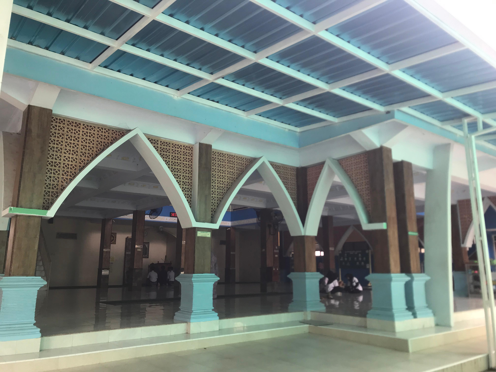

MASJID AL-KAUTSAR

MASJID
AL-KAUTSAR
Masjid Al-Kautsar adalah masjid yang berada di SMKN 1 Banyuwangi, masjid ini selalu digunakan
oleh warga sekolah untuk beribadah, beberapa kelas juga ada yang memilih melakukan pembelajaran
di masjid lantai atas. masjid Al-Kautsar dilengkapi fasilitas fasilitas yang dapat digunakan seluruh
warga sekolah. masjid Al-Kautsar juga digunakan saat ada acara acara tertentu khususnya acara
keagamaan.
FASILITAS MASJID AL-KAUTSAR